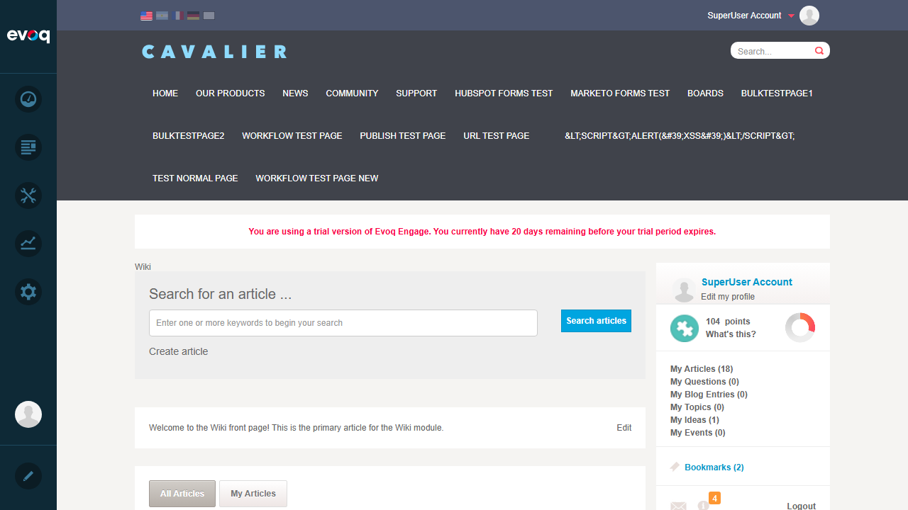
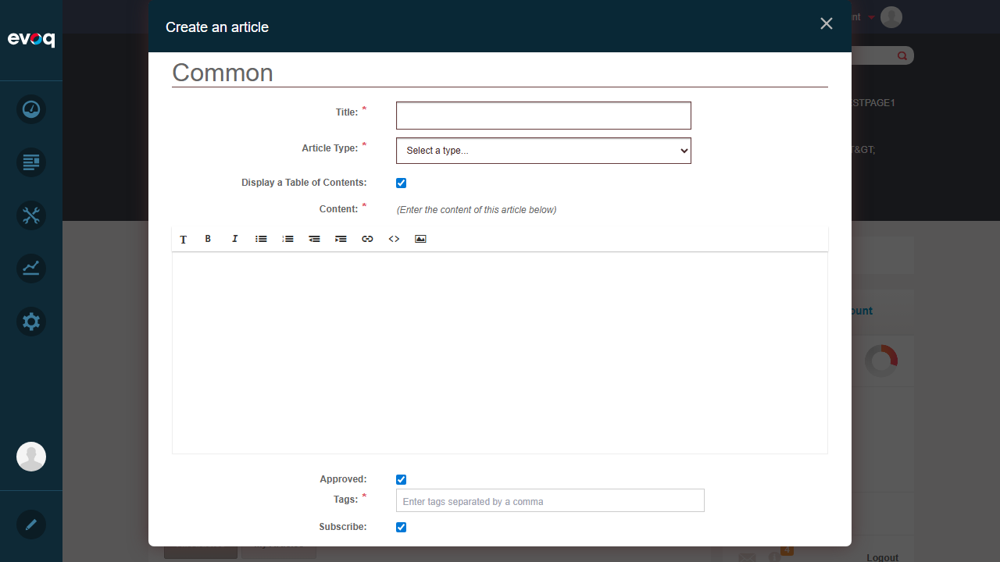
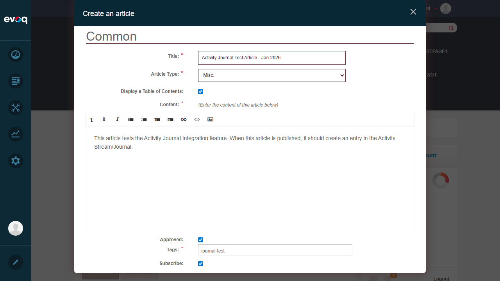
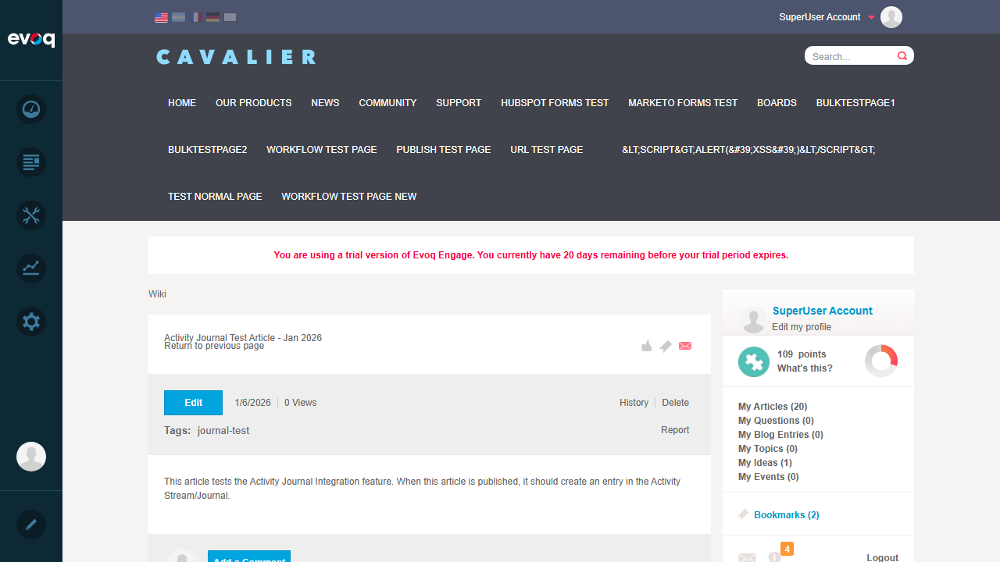
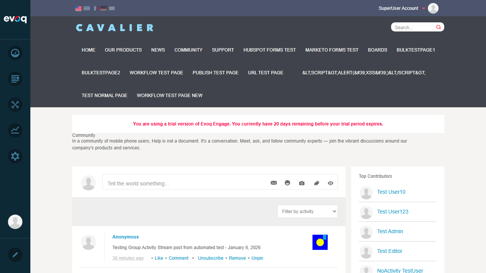
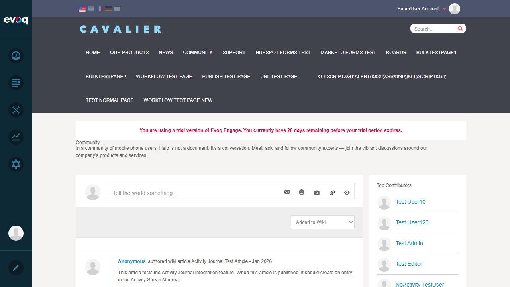

| Feature Name | Activity Journal Integration |
|---|---|
| Extension | Evoq.Social.Wiki (Module) |
| Description | Post wiki activities to user and group activity journals |
| Priority | Low (SMOKE Testing) |
| UI Location | User Profile > Activity Feed or Group > Activity Feed |
| Test Date | January 6, 2026 |
| Tester | Automated Test (Claude) |
| Test Scenario | Status |
|---|---|
| Create article journal entry | PASS |
| Test journal entry visibility | PASS |
Status: PASS
Objective: Verify that creating a wiki article generates a journal entry in the Activity Stream.
Expected Result: Article is published and a journal entry is created.
Actual Result: Article was successfully published. Page redirected to the new article page showing the content and tags.
Wiki Page:
Create Article Dialog:
Article Form Filled:
Article Published:
Status: PASS
Objective: Verify that the wiki article journal entry is visible in the Activity Stream.
Expected Result: The new article should appear in the Activity Stream with "authored wiki article" text.
Actual Result: The article "Activity Journal Test Article - Jan 2026" appeared at the top of the filtered Activity Stream with:
Activity Stream showing Wiki entries:
Activity Stream filtered by "Added to Wiki":
The Activity Journal Integration feature for the Evoq.Social.Wiki module is functioning correctly. When wiki articles are created and published, corresponding journal entries are automatically added to the Activity Stream. These entries are:
Overall Result: PASS